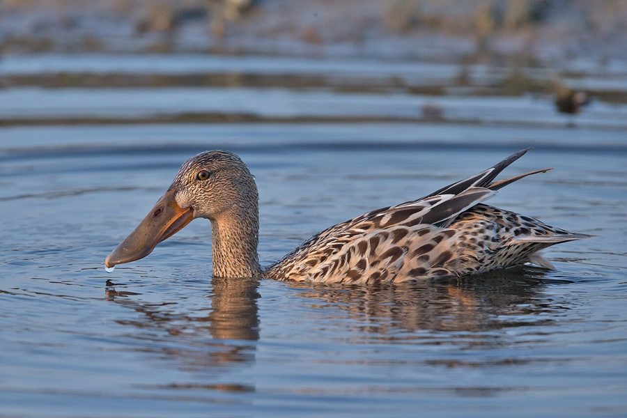

तिदारीNorthern Shoveler
Spatula clypeata · Anatidae · BRD-0095

- Scientific name वैज्ञानिक नाम
- Spatula clypeata (Linnaeus, 1758)
- Family कुल
- Anatidae
- Hindi हिंदी
- तिदारी
- Local names स्थानीय नाम
- tidari, tidri, chamcha hans, shoveler
- Status here यहाँ की स्थिति
- native
- Movement आवागमन
- Winter visitor
- IUCN IUCN
- LC
- Review समीक्षा
- audited and independently read
When to look कब देखें
Winter visitor शीतकालीन प्रवासी. Expected mainly in October, November, December, January, February, March, April. मुख्यतः अक्टूबर, नवंबर, दिसंबर, जनवरी, फ़रवरी, मार्च, अप्रैल में अपेक्षित।
Arrives in October–November from breeding grounds in Central Asia and Siberia; departs by April. Expected along the Ghaghra and Rapti river systems and shallow freshwater lakes. All migrants and visitors →
Uses and possibilities उपयोग और संभावनाएँ
Guide: Where the winter birds are: Bakhira, Parvati Arga and the Ayodhya jheels
Drawn from the documented uses in the profile below, where each is labelled traditional, current or a research lead. All uses →
Tell it apart from इनसे अलग पहचानें
तिदारी / Northern Shoveler
Spatula clypeata (Linnaeus, 1758) — Anatidae
तिदारी — ठंड के मौसम में साइबेरिया से आने वाली एक बड़ी हंस, जिसकी सबसे विशेष बात है इसकी विशाल, चपटी चोंच जो चम्मच (spoon) जैसी दिखती है — इसीलिए इसे "shoveler" या "तिदारी" (चम्मचा) कहते हैं। यह विशेष चोंच पानी में छलनी की तरह काम करती है। नर का सिर काला-हरा, पेट सफेद, और पंखों पर नीली पट्टियाँ होती हैं। यह झुंड में तालाबों के पास दिसंबर से फरवरी तक सबसे आम हंस है।
Quick Identification त्वरित पहचान
| Feature | Description |
|---|---|
| Size | Medium to large duck; 43–51 cm long |
| Distinctive feature | Enormous spatulate (spoon-shaped) bill — broadest of all ducks |
| Male plumage | Dark glossy green head; white breast; chestnut flank and belly |
| Female plumage | Mottled brown; greenish bill base |
| Wings | Blue-grey wing coverts visible in flight |
| Behaviour | Dabbles and filter-feeds; swings head side-to-side while feeding |
| Posture | Front-heavy appearance due to large bill |
Field tip: The Northern Shoveler is unmistakable — it is the only duck with a greatly enlarged, spatulate bill. Even from a distance, the awkward front-heavy shape is distinctive. Males are extremely colourful; females brown but the bill shape is diagnostic.
हिंदी — कैसे पहचानें:
बहुत बड़ी, चम्मच जैसी चोंच — तुरंत पहचान।
नर का सिर काला, पेट सफेद, पंख नीले।
मादा भूरी, लेकिन बड़ी चोंच पहचान दे देती है।
पानी में सिर घुमाते हुए खाना छानता है।
Morphology आकारिकी
Biometrics:
| Measurement | Range |
|---|---|
| Total length | 430–510 mm |
| Wing (flattened chord) | 218–245 mm |
| Tail | 90–110 mm |
| Bill | 50–75 mm (extraordinarily broad and long) |
| Tarsus | 35–42 mm |
| Weight | 500–1000 g |
Size: 43–51 cm long; wingspan 73–82 cm. Weight 500–1000 g (females at lower end). Substantially larger than Common Teal but smaller than some other dabbling ducks.
Plumage (male): Head and upper neck glossy dark green (iridescent). Back black-brown. Breast and forebody pure white. Belly and flanks deep chestnut-rufous. Wing coverts pale blue-grey; speculum green. Tail dark with white feathering on either side.
Plumage (female): Mottled brownish-grey overall. Head and neck buff with darker brown streaking. Underparts pale buff or whitish. Wing coverts blue-grey (same as male, useful for identification). Bill dark at tip, greenish at base.
Bill: Enormously enlarged and spatulate — the broadest bill of any duck species. Flattened, with serrated lamellae (filter structures) inside, allowing filter-feeding. Adapted for straining aquatic invertebrates and plant matter. Appears almost grotesquely large relative to head size.
Legs and feet: Greenish-yellow; placed slightly forward relative to body (unusual for dabbling ducks).
Eyes: Dark; small.
Sexes: Dramatically dimorphic during breeding season (which occurs in winter in the wintering grounds of eastern UP). Males much more colourful.
Juveniles: Resemble females but duller.
Vocalisations. Call repertoire:
- Drake call: A soft, hollow took-took or gulping sound; frequency 1.0–2.0 kHz.
- Duck call: A faint quacking, usually silent in winter.
- Contact calls: Soft grunts between pair members.
हिंदी: तुलनात्मक रूप से खामोश पक्षी। नर की हल्की-फुल्की कर्कश आवाज़।
Behaviour & Ecology व्यवहार और पारिस्थितिकी
Filter-feeding dabbler: The Northern Shoveler is a specialized filter-feeder, unique among dabbling ducks. It feeds on:
- Aquatic invertebrates (particularly mosquito larvae and pupae, small crustaceans)
- Aquatic insects (chironomid larvae, Daphnia)
- Aquatic plant seeds and shoots
- Small fish (rare)
Feeding technique: Swings its head side-to-side while advancing through shallow water, straining food items through the lamellae in its enlarged bill. Feeds in shallower water than most other ducks, often with bill partly submerged. Rarely tips up or dives; exclusively a surface feeder.
Habitat preference: Prefers shallow, nutrient-rich water bodies (marshes, shallow lakes, ponds) with abundant invertebrate life. Avoids deep, clear water.
Social behaviour: Forms flocks in winter, often with other duck species but tends to congregate in shallower, murkier water than Common Teals. Less gregarious than some ducks.
Feeding time: Crepuscular and nocturnal feeder; most active at dawn and dusk.
Predators: s, Marsh Harriers, wild boar.
हिंदी: पानी में सिर घुमाते हुए छोटे कीड़े छानता है। तालाब के छिछले हिस्से में रहता है। बहुत सतर्क नहीं होता।
Life Cycle / Phenology जीवन चक्र
Winter visitor: Arrives October–November from Central Asian and Siberian breeding grounds; departs by April.
Courtship: Pair formation occurs on wintering grounds in winter; highly ritualized displays involving synchronized swimming and head movements.
Non-breeding season: Remains in flocks on wintering grounds. No breeding occurs in eastern UP.
Moult: Complete moult occurs before arrival; birds arrive in fresh plumage.
Roosting: On open water at night; during day rests in shallow marshes or vegetated ponds.
हिंदी: सर्दी में आता है, गर्मी में चला जाता है। सर्दी में जोड़ा बनता है लेकिन घोंसला नहीं बनाता।
Host Plants or Prey आहार
| Food Type | Examples | Feeding Behaviour |
|---|---|---|
| Aquatic insect larvae | Chironomid larvae, mosquito pupae | Filter-feeding in shallow water |
| Small crustaceans | Daphnia, small copepods | Strain through bill lamellae |
| Aquatic plants | Sedge seeds, pondweed shoots | Pick and filter from water |
| Small invertebrates | Snail eggs, ostracods | Forage on muddy bottoms |
हिंदी: मुख्य रूप से पानी के कीड़े और छोटे जीव खाता है। पानी में चलते हुए सिर को एक ओर-दूसरी ओर घुमाता है।
Predators / Natural Enemies शत्रु
- Avian predators: Marsh Harrier, Peregrine Falcon
- Mammalian predators: Wild boar, rarely fox or jackal
- Eggs and chicks: Not relevant in wintering grounds (no breeding)
- Parasites: Waterfowl helminths
हिंदी: बड़ी शिकारी चिड़ियाँ इसका शिकार कर सकती हैं।
Agricultural / Human Relevance कृषि प्रासंगिकता
Protected species: The Northern Shoveler is listed in Schedule IV of the Wildlife (Protection) Act 1972, amended 2022, and is fully protected in India. Hunting is prohibited.
Wetland health indicator: Its presence indicates shallow, productive wetlands with abundant invertebrate populations — a sign of good water quality and habitat condition.
Minor crop damage: Occasionally feeds in flooded rice fields but causes negligible damage.
Cultural references: Appears in classical hunting texts as a valued waterfowl. Known in Hindi as तिदारी (tidari), likely derived from the shape of its bill.
Ornithological interest: Important marker species for monitoring shallow wetland ecosystems.
uses: [] caution: [protected]
हिंदी: यह विधि अधिनियम 1972 की अनुसूची IV के अंतर्गत पूरी तरह संरक्षित है।
Expected Locally स्थानीय रूप से अपेक्षित
This species is NOT a field record. The information below describes where the Northern Shoveler should be looked for in eastern UP based on published sources and habitat requirements.
Winter range: Expected in eastern Uttar Pradesh from October to April, particularly along the Ghaghra and Rapti river systems. Prefers shallow, marshy lakes and ponds with abundant invertebrate life.
Habitat preference: Shallow, vegetation-rich water bodies; avoids deep, clear water. Often in slightly more turbid water than Common Teals.
Peak occurrence: January–February.
Nearest published record: The Ghat Lakes near Balrampur and similar shallow wetlands in the Ghaghra floodplain have historically hosted wintering flocks of Northern Shovelers according to ZSI records.
What a first record would be: A dated photograph clearly showing the bird and its distinctive spatulate bill in a specific location, with date and GPS coordinates, submitted through the About page.
हिंदी: अक्टूबर से अप्रैल तक घाघरा नदी के पास उम्मीद है। तालाबों में झुंड में दिखता है। पहला रिकॉर्ड फोटोग्राफ और तारीख के साथ चाहिए।
Distribution वितरण
Global range: Temperate North America, Europe, and Asia. Monotypic across its range (one subspecies).
In India: Distributed as a winter visitor (October–April) throughout the country on suitable wetlands.
In Uttar Pradesh: Widespread in winter, particularly in eastern districts along the major river systems.
In Basti district / eastern UP: Regular and locally abundant winter visitor along the Ghaghra and Rapti systems and associated shallow lakes.
Research Questions शोध प्रश्न
- What are the precise migration routes and breeding grounds of Northern Shovelers that winter in eastern UP?
- How does the invertebrate fauna of preferred shoveler wintering habitats differ from other waterfowl habitats?
- What is the population trend of Northern Shovelers in the Ghaghra-Rapti system over the past 20 years?
- क्या जलकृषि (aquaculture) के विस्तार से इस चिड़िया के सर्दी के आवास में बदलाव आया है?
- How does the timing of monsoon withdrawal affect shoveler arrival dates and flock sizes in eastern UP?
- नर और मादा के सर्दियों की तरह और खान-पान में क्या अंतर है?
Similar Species मिलती-जुलती प्रजातियाँ
| Species | Key Difference | Hindi | Field Rule | |
|---|---|---|---|---|
| Common Teal (Anas crecca) | Much smaller (34–38 cm); bill tiny and pointed | छोटी मुर्गाबी | Shoveler is twice the size with an enormous flat bill. | |
| [[mallard\ | Mallard]] (Anas platyrhynchos) | Larger; bill normal-sized, not spatulate | दुग्ध हंस | Mallard bill is ordinary duck-like; Shoveler's bill is grotesquely enlarged and flat. |
| [[gadwall\ | Gadwall]] (Mareca strepera) | Similar grey and white pattern but bill normal | चितवा | Gadwall is smaller, lacks the bright green head and chestnut flanks, and has an ordinary bill. |
| Pintail (Anas acuta) | Males have chocolate head and white breast, but bill fine and pointed | सुई हंस | Pintail male lacks the large, flat bill and is more slender overall. |
Field rule: The Northern Shoveler is the only duck in the region with a greatly enlarged, spatulate (spoon-shaped) bill. This feature is diagnostic at any distance.
Taxonomy & Classification वर्गीकरण
Original description. Described by Carl Linnaeus in 1758 in Systema Naturae, 10th edition, volume 1, page 128, as Anas clypeata. Type locality is Europe.
Subspecies. Monotypic — Spatula clypeata clypeata. No subspecies are currently recognised. The genus Spatula contains three species; S. clypeata is the most widespread.
Family and order placement. Order Anseriformes; family Anatidae. Placed in the genus Spatula, a group of dabbling ducks characterized by enlarged, flattened bills.
Phylogenetic notes. Molecular studies confirm Spatula clypeata as distinct from other Anas species; the enlarged bill is an example of adaptive radiation within Anatidae for specialized feeding niches.
IUCN status rationale. Least Concern globally. Populations are stable and the species is widespread. Protected throughout India under Schedule IV of the Wildlife Protection Act 1972 (amended 2022). Not threatened by hunting in wintering grounds.
हिंदी: विश्वभर में फैली हुई प्रजाति है। भारत में पूरी तरह सुरक्षित है।
Photo Gallery फोटो गैलरी
No photos yet — add field photos to media/species/northern_shoveler/ and run node scripts/sync_photos.js.
Wanted photos:
- Male in breeding plumage (winter, when in UP)
- Female and male together
- Close-up of distinctive spatulate bill
- Flock feeding in shallow water
- Filter-feeding behaviour detail
- In flight showing blue wing coverts
References संदर्भ
- Linnaeus, C. (1758). Systema Naturae per Regna Tria Naturae (10th edn). Laurentii Salvii, Holmiae. Vol. 1, p. 128.
- Ali, S. & Ripley, S. D. (1968). Handbook of the Birds of India and Pakistan. Vol. 1. Oxford University Press, Delhi. Pp. 401–403.
- Cramp, S. & Simmons, K. E. L. (1977). Handbook of the Birds of Europe, the Middle East and North Africa. Vol. 1. Oxford University Press. Pp. 433–440.
- Baker, E. C. S. (1908). Game Birds of India, Burma and Ceylon. Jour. Bombay Nat. Hist. Soc. 18: 1–156.
- GBIF Occurrence Data — Spatula clypeata, India.
- IUCN Red List (2023). Spatula clypeata — BirdLife International assessment. Status: Least Concern.
Source file: species/fauna/birds/northern_shoveler.md